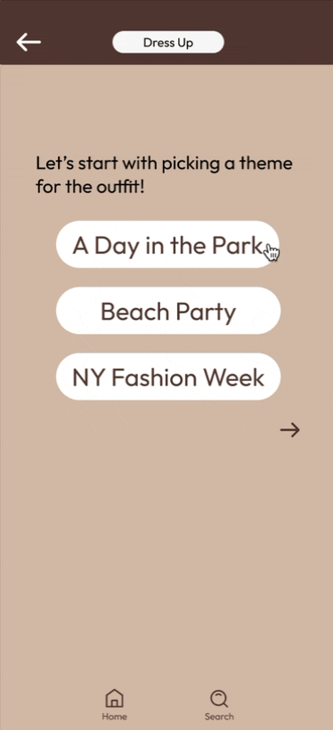

Overview
ReConnect was created as a project for my Usability and Information Architecture
class at UCSD. My team and I were challenged with creating a product for those with
hemispatial neglect (HSN) incorporating the use of virtual reality (VR) technology.
After pitching ReConnect in our class' shark tank competition, my team placed second
and was voted first in the categories of "Most Impactful Solution",
"Most Clearly Addressing the Problem", and "Most Interesting to have Future Development".
The Problem
795,000 people suffer from a stroke in the United States annually, and this number
is expected to increase 20% by 2030. Stroke is the leading cause of serious
long-term disability like HSN, which targets the ages 60+ the hardest. HSN causes
a lack of awareness of one side of the visual field and body, often the left side.
They may ignore the buttons on the left side of their shirt, or have trouble seeing
objects in their left field of vision.
Additionally, social isolation in stroke survivors is common, and family and friends
do not know how to support their loved one. There can also be friction when reaching
out after long periods of no contact, which makes connecting even more difficult.
Our team asked ourselves:
How might we provide specific answers and resources for someone who may not know what they are looking for?
How might we present information about a stigmatized topic so that users may feel supported and understood?
Research
First, we began with researching the product space, seeing what virtual reality
therapies were in use.
Competitive Analysis
Negami:
Negami is an augmented reality game which can be used at home for those with
HSN. This is done through using visual cues to guide truncal rotations,
promoting visual scanning.
We want to create a game that incorporates other
sensory cues and promotes limb movement, not just visual scanning.
Musical Game:
This musical game was created as part of a study on HSN. It is played in a
hospital setting under guidance, and promotes memory and motor coordination
through auditory and motor cues.
We want to create a game that can be
played in any environment, without needing to be monitored.
Additionally, we noticed all these have only the one HSN user playing the VR– it is a
solo experience.
We then moved on with researching the different groups who are involved in the recovery process after a stroke:
patients, caregivers (family and friends), and medical professionals.
Personas & Storyboards
Each team member made a persona for each of these groups, before we narrowed down
our core users to be patients. We then fleshed out our personas to better understand
our users and their pain points. Finally, we created storyboards where we envisioned our possible
product could provide help.
The Solution
Our team aimed to provide a platform for family and friends to find ways to
connect with their loved ones who have HSN through the multiplayer game, ReConnect.
ReConnect let;s stroke patients bond with their friends and family during recovery,
no matter the distance. Loved ones can chat and interact with patients in-game, while
playing games that incorporate behavioral therapy to treat HSN. In game, the players
can revisit old memories, and view content submitted by other family and friends who
are not playing, but want to show their support.
Reconnect wasn't just a game, but a gateway to connect loved ones.
Ideation
We moved forward with two main goals in mind:
- Create a easy way to connect over any distance.
- Use technology as a means to connect different age groups, instead of it being a barrier.
We started with defining what the gameplay would be like. We kept HSN therapy
techniques in mind, and thought of ways we could embed them so patients could
practice and then transfer these techniques over to their daily lives.
We landed on the concept of recreating a HSN patient's room in VR, where they
would search for objects that would trigger mini-games. These games would
incorporate aspects such as neglected limb movement and truncal rotations, and
completing them would present the player with photos and videos of their loved
ones. Additionally, a loved one could watch the player's game and provide support
through a text chat.
Pictured: examples of initial gameplay sketches
User Testing
We then conducted user testing, with 13 of our classmates testing our concept: 11
on the user end and 2 on the loved one end. We wanted to focus on how that experience
would feel like, rather than focusing on the visuals.
We created a paper prototype of the games a stroke patient would play in VR,
setting up the "room" around them using paper furniture. Users testing the patient
end wore a box that blocked their left field of vision to emulate the struggles a
player with HSN might have. The app for the loved one's end was recreated through
slido, used as a live chat feature where friends could provide support on their progress,
and through clapping and cheering in person after the completion of our three minigames.
Key Takeaways from User Testing
-
Loved ones felt like they wanted to contribute more. While it was enjoyable to
give words of encouragement, users wanted a more active role in the recovery process.
Solution:
Make ReConnect a multiplayer game. Loved ones can provide support throughout
the game, making the social aspects more prevalent. Additionally, create features
in the partner app where other family and friends can submit videos, pictures,
or audios that are delivered to the patient.
-
The use of the live text chat was not effective for building connections.
Some users were unaware that their family member was leaving comments
until the whole game finished. This could be due to the computer screen being
out of view, or the user being immersed in the game where the text could
not gain their attention.
Solution:
Connect players through a voice chat. Interaction is more built in, and will
be more obvious. Rather than confining communication to text messages, loved ones
have the option to use emotes or reactions to help convey emotions and aid connections.
The Design
ReConnect has two platforms with different features:
- Dual player therapy minigames
- Room interaction
- Data recording on body movement
- Dual player minigames through Cat POV
- Time sensitive photo/video uploads
- Reports on playtime and body movement
VR Overview
The HSN player explores their VR version of their room, looking for highlighted
objects that will trigger a minigame. These minigames are then played together with their loved one.
Puzzle Game
This game was designed to encourage truncal rotations, as the HSN player must
rotate to see the different screens shown in VR. This encourages the player to
learn scanning techniques, and alleviates HSN symptoms as they learn to turn
towards their neglected side. Additionally, there is practice in using the
neglected limb to drag and place puzzle pieces.
Loved One
VR Pre-Game

Loved ones are able to choose a picture which will be the background of the
puzzle which both players will work together to solve. They can also write
a short description or “hint” which will be presented to the player before
starting the minigame.
Meanwhile, the VR player will receive instructions on how to play using the VR controls.
VR Game
In VR, the player would see three screens. On the left are the HSN player's puzzle
pieces, and on the right are their loved one's pieces. They drag the pieces to the
center to solve it, drawing attention to their negelcted limbs. Each player only has
control over their respective pieces, but they can see each other's pieces and work
to solve it together.
Dress Up Game
This game was designed to allow practice in the daily activity of getting dressed,
something HSN patients tend to struggle with. This allows the player to develop
a sense of independence and self sufficiency, when they apply these learned skills
to their daily routine. It provides hints to the HSN player to address their neglected
side.
Loved One

Cat POV Search

Loved ones first select a theme, and an outfit that fits the theme. They then take the POV
of a cat in the VR room. Together, the players can search for the clothes which must be collected
to move to the next stage. This encourages scanning as the HSN player follows the cat's movements,
or searches on their own for the clothes' location.
VR Game
The HSN player would receive the clothes on their end, and they would go through the actions of dressing
themselves which is reflected on screen. Their movements would be tracked with the hand controllers.
Body Position Game
This game was designed to encourage use of neglected limbs. With symmetrical poses,
HSN players can learn to do actions on both sides of their body.
Loved One
VR
Loved ones first select a pose, and the pose is sent over to the HSN player in VR.
The player would move their limbs to match the pose, which are tracked using the
hand controllers. They are provided visual feedback following their movement and
showing how accurate they are, and haptic prompts from the hand controllers.
Video Messages
Loved One Submission
When an HSN player begins to play, their loved ones receive a notification
prompting them to submit a video message for encouragement or support. They
can quickly open the app, read the day's prompt, and send their submission.
This simple action allows them to be an active part of the player's journey,
sharing moments of connection and motivation, even if they're not directly playing the game.
HSN Player View

In VR, once the player opens the door at the end of the level, a screen with
the prompt for the day will come up, where the player can look through the videos
submitted by their loved ones, experiencing heartfelt messages, encouraging moments,
and shared memories, which would reinforce the sense of connection and support throughout
their journey.
App Features
Home page:
Loved ones can watch the livestream of the stroke patient playing the game,
and access the menu to join the game.
Com-mew-nity:
Loved ones can upload, share, like, and comment on each other's posts.
Progress page:
Loved ones can view detailed statistics on their stroke patient's performance. Metrics such as limb usage and body rotations are tracked with the VR gear.
Next Steps
If the project were to be continued, we would want to develop more features and
expand the reach to aid more patients with other conditions, not just HSN.
This would involve diversifying games, focusing on different treatments and
continuing to take inspiration from current therapy techniques. This would
also involve implementing new methods of measurements depending on the condition.
Additionally, we would aim to expand the gameplay for larger groups to be able to incoporate more loved ones.
If ReConnect were to be implemented as a functional game, we would also want to monitor and
measure social isolation changes in the users. This would include:
- Quantitative Data
- Number of times played with a loved one
- Number of chats and video messages sent (checking consistency)
- Qualitative Data
- Surveys asking about satisfaction and strength of connection
Reflection
This class and project emphasized design and ideation, rather than implementation.
I'm grateful to have the opportunity to create something without being restrained
to what my team could make functional, as many of us had not had experience creating
games before. This project pushed me to think out of the box and create a solution
in a way that had not been done before.
Additionally, this was my first time something for VR. I've always wanted to try
3D modeling, and this project was a great way to get exposure and learn from my peers.